The Lovinses' new house/office includes an array of state-of-the-art technologies. The result?
What sort of house do you build when your profession and passion is convincing people that energy efficiency and renewable energy sources can help cure our ailing economy, remedy a host of environmental ills, right social injustice, and make people happy? One that proves the point, of course. Which is just what the home/office/indoor farm of Amory and Hunter Lovins does. (The Lovinses are the subjects of this issue's Plowboy Interview on page 16.)
Today, even though the energy systems aren't complete, the building's performance already indicates that it is one of the most efficient in the world. With R-60 ceiling insulation, R-40 walls, earth berming, extensive R-5.3 glazing, an integral solar greenhouse, and a natural air infiltration rate of fewer than 0.2 changes per hour, the massive, super insulated structure has no need for auxiliary space heating. Indeed, Hunter and Amory describe their home's design as more than 130% passive solar, meaning that it's intentionally configured to receive, capture, and store more solar input than should be necessary to heat the structure completely.
In their view, it's better to vent heat than to run short. The wisdom of this overkill approach became apparent last fall, when Hunter, Amory, their dog, Nanuk, and several staff members of the Rocky Mountain Institute faced weather conditions that were unusual even for 8,900-degree-day Old Snowmass, Colorado. During a 39-day period in the late autumn, while they were still closing in the dwelling, they saw only three hours of sun, and temperatures ranged from 10° to -40°F. Despite numerous holes yet to be plugged, they were able to keep inside temperatures in the 50's and 60's by operating two woodstoves a third of the time. And once the building was sealed up and the roughly 1,000,000 pounds of cold-soaked masonry began to warm and dry, they were able to stop firing the woodburners. By the first of January, indoor temperatures held between 65° and 70°F, and the warmth evenly permeated the draft-free structure.
Eventually, as the time and money become available and technologies mature, enough solar equipment will be installed to make the Lovinses' 4,000-square-foot home and operations center for Rocky Mountain Institute a net energy producer. (It's already the sort of building that Amory describes as a habitable oil well, saving the equivalent of half a barrel of oil a day.) Even in the month of January, they'll have kilowatts of excess heat to offer perhaps to neighbors-for space heating. And photovoltaic panels will supply all of the building's meager electrical requirements. Think about it: Their house will actually be able to export power!
Perhaps the best way to introduce you to the specifics of this innovative structure is to take a walking tour, just as two of MOTHER's editors did in mid-March of this year. The multipurpose dwelling has four distinct areas (which ascend from east to west): offices for the Rocky Mountain Institute ... a striking integral greenhouse ... the common eating/living area ... and the Lovinses' private quarters. The ever-efficient couple has thus nixed job transportation costs by designing a "50-foot commute to work through a jungle."
Our tour begins in the offices, where as many as 11 people work (when the skiing is less than top-notch). Books, making up perhaps the most complete conservation and renewable energy library in the country, line all the interior walls of this section from floor to ceiling.
That high ceiling shows the main structural components clearly. Colorado red spruce posts 12" in diameter support 12" X 16" oak beams and 6" X 12" oak purlins, upon which lies 3" X 6" tongue-and-groove cedar decking for the earth-covered roof. (The oak beams were donated by the Meadow creek Foundation in Fox, Arkansas.) Above the roof deck lies a 5/8" layer of insulation (into which wiring is placed), a vapor barrier, 8 to 12" of polyure thane insulation, an EPDM waterproof membrane, a porous mat to encourage drainage, 4" of pea gravel, another protective stonemat, and 8 to 10" of soil. The varying thickness of the insulation creates slopes for rain and snow melt to drain to dry wells.
The windows, placed strategically for their views of the Rocky Mountain landscapes, aren't just ordinary double-glazed units. Between the two pieces of glass is a one-mil-thick specially coated Mylar film called Heat Mirror, which bounces infrared radiation back into the building. This film raises what would have been an R-1.7 window to R-4.2. But there's more: The space between the sheets of glass is filled with argon, an inert gas that's one third less conductive than air. The argon charge raises the ordinary-looking glazing to an R-value of 5.3-roughly the equivalent of normal windows covered with insulating shades. These Heat Mirror/argon windows are so efficient that with a reflective snow cover they can actually offer a net heat gain when located on the north side of a building!
Looking at the window jambs, you can see just how massive the 16" rock walls actually are. The curving buttresses were built by using the slip-form method, in which forms are set up, 4" insulation of polyurethane Freon-filled foam is placed in the middle, and rock is mortared in place on each side of the thermal barrier. After a few hours of curing, the 20" forms are removed, and the still-workable mortar is dug out between the rocks to provide a finished appearance.
Reinforcing rod laces through the sandstone walls, and 7,500-PSI mortar-mix concrete was used to provide the strength to hold up the earth cover and the massive beams in the ceiling. The structure is probably overbuilt, but the Lovinses claim that they've tried to build with future archaeologists in mind. After all, houses that last only 50 years are examples of wasted energy.
Moving west from the office, we walk into the solar greenhouse. Today it's home for over a thousand seedlings being raised by a landscaper friend, but Amory and Hunter plan to turn the greenhouse into something akin to a tropical forest. Fruit and nut trees, vegetables and flowers will grow on terraces; fish tanks will provide nutrient-rich waste water to help them grow. Along the back wall of the living room, an indoor waterfall will aerate water for circulation to the fish.
The roofline of the greenhouse rests on an arch that's a monument to engineering. Sixteen tons of concrete and 1-1/4 tons of reinforcing steel went into the cantilevered support, which was designed and built under the supervision of an engineer with bridge building experience.
Three large, operable vents are fitted into the top of the arch's face, so that excess heat from the greenhouse can be spilled. Operable windows low in the front wall complete the path for air movement. Also, a 100-yardlong serpentine of 1/2" polybutylene pipe that will be hooked into the domestic water system was cast into the face of the masonry. This preheater will raise the incoming water temperature from about 40°F to 80° or 90°F, greatly reducing the load on the future solar water system. In addition, heat from the greenhouse peak can be distributed through the concrete slab floor and out a register to offer a further control on the indoor climate.
Four masonry cylinders make up the back wall of the greenhouse. Three will be fitted with oversize versions of lazy Susans to make efficient use of the storage space. But the third from the left is a bathroom that bears checking out. Inside, you'll find an Ifö Cascade 3-liter (0.8-gallon) toilet, two low-flow shower heads in a double-wide shower, and a 30-watt Mitsubishi heat exchanger (model VL-500 132) that controls humidity and serves as an exhaust fan.
Continuing west into the living area, the floor level rises about three feet to a slab floor that's tinted a deep reddish brown to absorb solar energy. Light plays into this area through the angled greenhouse glazing until about noon, making it a bright and cheery place to eat breakfast. Later in the day, reflected light is more subdued, but artificial lighting isn't required until dusk.
In fact, the overall lighting requirement of the house is minimal-it's a modest fraction of the building's amazingly low total electrical requirement of 1/5 of a watt per square foot per month-for a couple of reasons. First, the windows and white reflective walls have been arranged to provide natural lighting for all activity centers during the day. And after dark, very efficient light bulbs are switched on where needed. Norelco SL*18 fluorescent screw-in bulbs use 18 watts of power but put out about 1,100 lumens-the equivalent of a 75-watt incandescent bulb. A high-frequency (20 kilohertz) ballast eliminates the flickering and buzzing that are characteristic of most old fashioned fluorescent tubes, and the light given off is a little closer to the color of sunlight than is the light tungsten gives off. The $25 price tag sounds high, but over the course of one bulb's 7,500-hour life (five to ten times that of an incandescent), it will actually save better than $30 worth of electricity.
Proceeding along the back hall toward the home's main air-lock entry, we come upon the utility/laundry room. Inside it, on the right, is a solar clothes dryer-one that's a little different from your ordinary clothesline. A closed-in area that's about eight feet square rises to an angled skylight in the roof that admits solar energy. Low-wattage circulator fans push the air heated by the north wall's brown absorber surface down to flow between a series of clothes rods. These hangers are raised or lowered by a hand winch. With the power required by the circulators and the occasional use of another Mitsubishi air-to-air heat exchanger to remove humidity, the solar dryer uses about one one-hundredth as much energy as a conventional dryer. (And there's no problem with shrinkage!)
At the other end of the utility room, in an insulated cabinet, are a pair of propane-fired demand water heaters, which come on only when someone turns on a faucet and causes a pressure drop in the hot-water lines. Right now, only the Aquastar-which provides a constant output, rather than change in, temperature-is hooked up. Its capacity is easily high enough to handle the demands of the low-flow fixtures in the building.
It was never Amory and Hunter's plan to try to implement simultaneously all the energy schemes they had in mind. Rather, they plan to continue adding to the house's features over the next few years. When the next stage, a solar domestic water-heating system, is installed, the demand heater should no longer be necessary.
Our next stop on the tour is across the corridor in the kitchen area, and the first item of interest there is the room that will be the passive refrigerator. Passive refrigerator? Yes, with the help of Dr. Larry Schlussler, P.E., who designs and builds the world's most efficient, low-voltage refrigerators, the Lovinses are planning to experiment with a roof mounted panel that will give up heat to the night sky. (On a clear night, outer space-which is only a few degrees above absolute zero-can actually pull heat from a surface that is sufficiently emissive.) Heat loss from the plate will cool a refrigerant that runs through tubes. When the refrigerant becomes sufficiently chilled, it will condense and "fall" through the tubing loop to the well insulated space below. The tubing inside the refrigerator will run through large blocks of ice, where heat will be absorbed from the ice, causing the refrigerant to vaporize, rise, and repeat the cycle.
For the time being, refrigeration is being handled by a conventional compressor-driven unit ... with one difference. The motor, compressor, and evaporator have been placed on top of the box, where their waste heat won't rise into the icebox itself. Cooking is being done on a propane-fired range right now, but, naturally, there are plans: It might be converted to methane-which would be produced from the waste products of the household and of a "crittery" that will be built in a couple of years-or maybe it will burn hydrogen electrolyzed from surplus photovoltaic electricity. Above the stove is another Mitsubishi air-to-air heat exchanger (the house-has five all told) instead of the usual exhaust hood.
Artificial lighting in the kitchen is from fluorescent tubes equipped with high-frequency ballasts. For the moment, the fixtures are either on or off, but soon a photocell controlled electronic unit will vary the brightness (and power consumption) of the tubes according to the amount of light needed in the room.
Our tour continues up a set of stairs to the bedroom wing. This portion of the house is thermally isolated from the main area, so it's been designed to get along without the tremendous contribution of the solar greenhouse. Passive-gain windows make up a larger percentage of south wall area here, and several back-up mechanisms have been provided. Polybutylene piping runs through the slab, so that solar-heated water can be circulated from the domestic array, and a 1,500-gallon tank was built into the ground below the floor of the master bedroom closet. This vessel, which is insulated with 4" of polyurethane foam, will be the main storage for the solar collector system.
The master bath has more water-conserving fixtures. Here a 4- (not 3-) liter Ifö Cascade toilet is used, because of the long and somewhat circuitous plumbing run to the septic system, but the shower heads are more conservative than those in the other bath. To get down to the amazingly low flow rate of 0.5 gallons per minute, the water is pushed out by compressed air.
At the end of this tour, there's time to hear of Amory and Hunter's other, less immediate plans (such as a glazed rooftop sleeping dome and a solar-served hot tub) and to contemplate the entire energy-frugal yet aesthetically harmonious structure. There's no question but that their home and office-designed by architect Steve Conger of the Aspen Design Group-is a wonderful place to be. It is, as Amory describes it, a technologically advanced building that's attractive, multifunctional, and comfortable. There are few square corners: One area just blends into another. And the details of construction are beautiful. The massive beams and rockwork lend a feeling of security and warmth. The gorgeous cabinets built by Joel Zane, complemented by earthtone tiles in both bathrooms and at sinks, make you want to run your hands over them.
All of this doesn't just suit the desires of the owners; it has another important purpose. Hunter and Amory-who live near the popular resort area of Aspen-regularly show their home and office to people whom they hope to convince to become involved in renewable energy and conservation. When a visiting utility executive is surprised to find that he or she would be most pleased to live in a house like the Lovinses', this model of conspicuous nonconsumption is selling renewables and conservation to what has been the most impensrable market.
You probably won't be surprised, then, to find out that the Lovinses' house wasn't cheap. The building costs, including land and financing, were about $625,000, or about $155 per square foot. Of course, conventional stick houses built nearby cost between $75 and $150 per square foot. (One builder we talked to is finishing a custom 4,000-square-foot home for about $1,000,000!)
But there's a big difference in the way Hunter and Amory went about building their house. Volunteers supplied a great deal of the labor on the structure. During the year and a half of construction, 100 people pitched in to help ... by last fall the Lovinses had spent over $50,000 just feeding workers. According to Amory, they could have built the house for about the same cost by not using volunteers, but they wouldn't have gotten the house they wanted. (Contractors didn't believe it could be done!) And they gained the satisfaction-and control-that came from participating in the construction themselves and from working on the house whenever they were able to take time from their business schedules. (After all, the money-which they put up personally, rather than through Rocky Mountain Institutehad to come from somewhere.)
Of course, the biggest difference between the Lovinses' home and the high-priced energy sieves in the same area is cost of operation. With his typical attention to detail, Amory has meticulously calculated the rate of return on the energy-conserving features of their home. The result? The energy-saving features will pay for themselves in the first year. In 40 years, they'll have repaid the entire construction cost of the house.
Argon-filled Heat Mirror window, are available-from Alpen Products, Inc. Highway 82, Glenwood Springs, CO 81601. They cost approximately $3.00 to $5. 00 more per square foot than standard double-glazed units.
The model VL-500 B2 Mitsubishi air-to-air heat exchanger can be ordered from Solar Components Corp., P.O. Box 237, Keene, NH 03105 ... for $139.95 plus shipping.
Norelco SL*18 fluorescent screw-in bulbs should be available through your local electric supply company. (They are made by Philips Lighting Corporation, Bloomfield, NJ 07003.)
The Aquastar demand water heater can be ordered from Solar Water Works, 2340 S. W. 15th St., Albany, OR 97321. It costs about $600.
A 4-liter Ifö Cascade toilet is available from Wendy Corpening, U.S. Marketing, 1464 Love Creek Rd., Avery, CA 95224 ... for $315 (less the seat) plus shipping.
The Reduced Flow Minuse Shower Unit can be purchased through Water and Power Conservation International, Inc., P.O. Box 310, Mokelumne Hill, CA 95245. . . for $259.95 plus shipping.
|
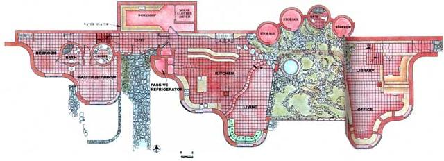 STAFF PHOTO |
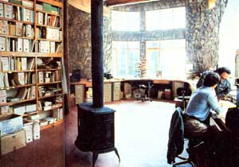 PHOTO BY DOUG LEE |
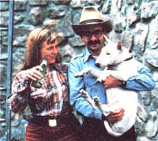 PHOTO BY DOUG LEE |
|
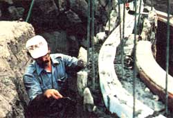 PHOTO BY DOUG LEE |
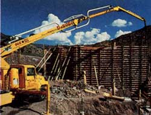 STAFF PHOTO |
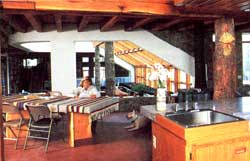 STAFF PHOTO |
|
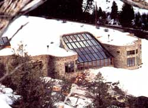 STAFF PHOTO |
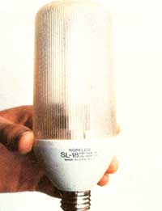 STAFF PHOTO |
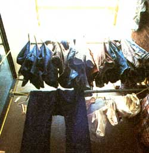 STAFF PHOTO |
|
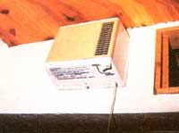 PHOTO BY DOUG LEE |
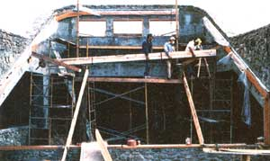 |
|